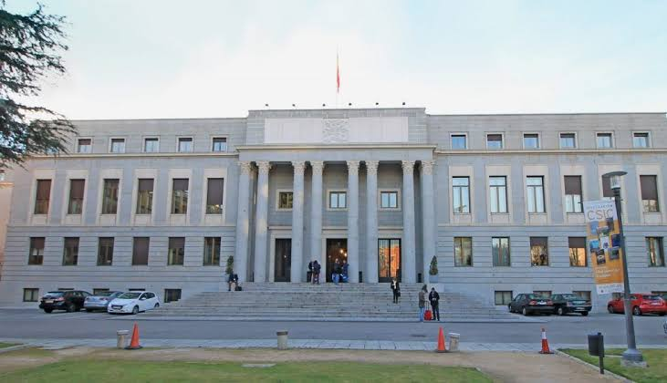

Sobre la Serie
Sinopsis y Contexto
La Casa de Papel es una serie de crimen y thriller psicológico que narra dos grandes atracos separados en el tiempo. En el primero, la banda ocupa la Fábrica Nacional de Moneda y Timbre durante once días, imprimiendo el propio dinero del Estado con total legitimidad. En el segundo, el objetivo es la Reserva de Oro del Banco de España.
La narrativa mezcla tensión policial, drama de personajes y una crítica velada al sistema financiero y a las instituciones de poder. La serie está narrada en flashback por Tokio, uno de los miembros del grupo, lo que añade una capa emocional constante al relato. Cada episodio termina con una revelación o un giro que obliga al espectador a seguir.
El Profesor planifica cada movimiento con décadas de antelación y contempla miles de variables. Su obsesión por no cometer errores choca con la naturaleza impredecible de los seres humanos —tanto dentro del edificio como fuera—, y esa tensión es el motor dramático de toda la serie.
Dónde se rodó
La serie fue grabada principalmente en Madrid, España. Los exteriores de la Fábrica Nacional de Moneda y Timbre —ubicada en el barrio de Moncloa— aparecen en la primera parte, aunque los interiores fueron recreados en sets de rodaje.
Madrid y alrededores
El pueblo de Alpedrete, en la Sierra de Guadarrama al norte de Madrid, albergó la casa donde El Profesor planificó los golpes durante años. El Banco de España, en el centro histórico de la ciudad, es el escenario del segundo atraco. Los directores utilizaron el exterior del edificio real para las tomas externas.

Locaciones internacionales
La tercera parte en adelante expandió el rodaje fuera de España. Se filmaron escenas en Florencia y Venecia (Italia), Copenhague (Dinamarca) y Panamá, donde se ubicaron escenas de fuga y de los personajes viviendo en el exilio tras el primer atraco.
La ciudad de Toledo, a 70 km de Madrid, también aparece en algunos capítulos como locación para secuencias de la historia pasada de los personajes.
El Banco de España en el mapa
Creadores
Creadores y Producción
La Casa de Papel fue concebida como una serie de televisión en abierto para Antena 3, con un presupuesto modesto y ambiciones acotadas. Su transformación en fenómeno global fue impulsada por la adquisición de Netflix, que relanzó la serie a nivel mundial y financió las partes siguientes con un presupuesto significativamente mayor.
Álex Pina
Creador y showrunner
Creador y guionista principal de la serie. Antes de La Casa de Papel, Pina trabajó en series como Vis a Vis y El Barco para la televisión española. Junto a Esther Martínez Lobato fundó Vancouver Media, la productora que desarrolló el proyecto. Pina escribió la Biblia de los personajes y el arco global de los cinco años de la serie.
Jesús Colmenar
Director (Partes 1 a 4)
Director principal de las primeras cuatro partes. Colmenar estableció el lenguaje visual de la serie: la tensión en los planos cerrados, el uso del color rojo como elemento narrativo y el ritmo de las secuencias de acción dentro del edificio.
Esther Martínez Lobato
Productora ejecutiva
Cofundadora de Vancouver Media junto a Álex Pina. Martínez Lobato supervisó la producción de todas las partes y coordinó la relación con Antena 3 primero y con Netflix después, incluyendo la negociación de los presupuestos expandidos para las últimas temporadas.
Javier Gómez Santander
Guionista principal
Uno de los guionistas más importantes del equipo. Participó en el desarrollo de los personajes de Berlín, Nairobi y Denver, y co-escribió varios de los episodios más aclamados de la serie. También colaboró en el guion del spin-off Berlín (2023).